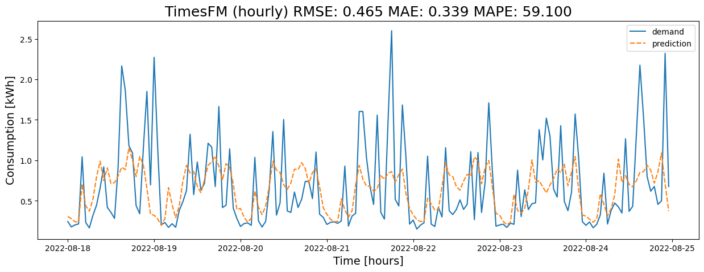

🕰️🤖 TimesFM — Foundation Model for Time‑Series Forecasting#
TimesFM is a foundation model for time-series: you feed it a recent context window of values and it generates the future (the forecast). Because it’s pretrained on many series, it can capture common patterns and produce probabilistic outputs (e.g., P10/P50/P90) by sampling. Think of it as a general-purpose forecaster you steer with a few knobs—context length, horizon, number of samples, and device/precision (CPU/GPU, bfloat16/float16).
What you’ll learn
🧠 What TimesFM does (foundation model pre‑trained on many series)
📥 Data prep: context window & forecast horizon
📏 Scaling/standardization and inverse transform
⚙️ Inference knobs (samples, quantiles)
🖥️ Devices/precision (CPU/GPU/bfloat16/float16)
📊 Plots & diagnostics, 📏 metrics & backtesting
🛠️ Setup & Imports#
We use PyTorch/NumPy for arrays/devices and the TimesFM API for inference.
Pin library versions (especially torch/CUDA) for reproducibility.
import sys; print(sys.version)
3.11.13 (main, Jun 4 2025, 08:57:29) [GCC 11.4.0]
!pip uninstall -y torch torchvision torchaudio transformers
!pip install --no-cache-dir \
torch==2.8.0+cpu torchvision==0.23.0+cpu torchaudio==2.8.0+cpu \
--index-url https://download.pytorch.org/whl/cpu
!pip install --no-cache-dir "transformers==4.44.2" accelerate
!pip install --no-cache-dir "transformers>=4.45" accelerate
📏 Metrics#
Point: MAE, RMSE, MAPE
Probabilistic: Pinball loss, CRPS, coverage of P10–P90
Always compare against strong baselines (Lag‑7, LR/RF/SVR, Prophet).
📊 Visualization & Diagnostics#
Plot actual vs P50 with a P10–P90 band; inspect residuals over time and error by hour/DoW/temp to expose missed structure.
import pandas as pd
import numpy as np
import datetime
import matplotlib.pyplot as plt
import seaborn as sns
from sklearn.metrics import mean_absolute_percentage_error
from sklearn.metrics import mean_absolute_error, mean_squared_error
import torch
from transformers import TimesFmModelForPrediction
import warnings
warnings.filterwarnings('ignore')
Read datasets#
📥 Load & Prepare Data#
Parse timestamps to DatetimeIndex
Ensure a fixed frequency (e.g., hourly
H)Document units (e.g., kW, kWh) and the time window (start/end)
🕒 Time Index & Frequency#
Keep a regular grid and consistent timezone (often UTC).
Resolve DST gaps/overlaps before modeling.
dataset = pd.read_csv('data/kaggle_competition_dataset.csv',
parse_dates=['time'])
dataset.set_index('time', inplace=True)
dataset.info()
<class 'pandas.core.frame.DataFrame'>
DatetimeIndex: 8592 entries, 2021-09-01 00:00:00 to 2022-08-24 23:00:00
Data columns (total 12 columns):
# Column Non-Null Count Dtype
--- ------ -------------- -----
0 temp 8592 non-null float64
1 dwpt 8592 non-null float64
2 rhum 8592 non-null float64
3 prcp 2159 non-null float64
4 snow 119 non-null float64
5 wdir 8592 non-null float64
6 wspd 8592 non-null float64
7 wpgt 8592 non-null float64
8 pres 8592 non-null float64
9 coco 8396 non-null float64
10 el_price 8592 non-null float64
11 consumption 8592 non-null float64
dtypes: float64(12)
memory usage: 872.6 KB
Features#
demand = dataset[['consumption']]
demand = demand.rename(columns = {'consumption':'demand'})
demand.tail()
| demand | |
|---|---|
| time | |
| 2022-08-24 19:00:00 | 0.678 |
| 2022-08-24 20:00:00 | 0.457 |
| 2022-08-24 21:00:00 | 0.500 |
| 2022-08-24 22:00:00 | 2.321 |
| 2022-08-24 23:00:00 | 0.678 |
Forecast#
🧰 Context vs Horizon (Core Idea)#
Context length: how much history you pass in
Horizon (prediction_length): how many steps ahead to forecast
Align these with your operational use‑case (e.g., day‑ahead = 24 steps hourly).
🤖 TimesFM in Simple Words#
TimesFM is a pretrained foundation model for time series.
You feed the recent history (context), it generates future values; sampling can give probabilistic forecasts and quantiles (P10/P50/P90).
🖥️ Devices & Precision#
Use GPU (cuda) if available; CPU works but slower.
Mixed precision (bfloat16/float16) can speed up inference—verify numerical stability after switching.
FREQ = "H"
SAMPLES_PER_DAY = 24
predict_days = 7
training_data_length = 28
last_dataset_day = dataset.index.max().date()
prediction_start = pd.to_datetime(last_dataset_day - pd.Timedelta(days=predict_days-1))
def _timesfm_forecast_steps(model, context_values: np.ndarray, steps: int, freq_category: int = 0):
"""Forecast `steps` points, chunking if model.config.horizon_length < steps."""
device = model.device
dtype = model.dtype
try:
per_call = int(model.config.horizon_length)
except Exception:
per_call = 128 # safe default
ctx = torch.tensor(context_values, dtype=dtype, device=device)
out_all = []
remaining = steps
while remaining > 0:
this_call = min(remaining, per_call)
with torch.no_grad():
out = model(
past_values=[ctx],
freq=torch.tensor([freq_category], dtype=torch.long, device=device),
return_dict=True,
)
yhat = out.mean_predictions[0][:this_call]
out_all.append(yhat.detach())
ctx = torch.cat([ctx, yhat], dim=0)
remaining -= this_call
return torch.cat(out_all, dim=0).float().cpu().numpy()
def rolling_timesfm_forecast():
# Ensure DatetimeIndex & sorted, and hourly cadence
df = demand.copy()
df.index = pd.to_datetime(df.index)
df = df.sort_index()
# Drop duplicate timestamps if any
df = df[~df.index.duplicated(keep="last")]
y_all = df["demand"].asfreq(FREQ).ffill().bfill()
actual_full = pd.DataFrame()
forecast_full = pd.DataFrame()
for d in range(predict_days):
predict_for_start = prediction_start + pd.Timedelta(days=d)
predict_for_end = predict_for_start + pd.Timedelta(days=1)
training_end = predict_for_start - pd.Timedelta(seconds=1)
training_start = training_end - pd.Timedelta(days=training_data_length) + pd.Timedelta(seconds=1)
# Slices
y_train = y_all.loc[training_start:training_end]
y_test = y_all.loc[predict_for_start:predict_for_end - pd.Timedelta(seconds=1)]
if len(y_train) < training_data_length * SAMPLES_PER_DAY or len(y_test) == 0:
continue
# Forecast exactly 1 day (24 steps hourly)
yhat_np = _timesfm_forecast_steps(
model,
context_values=y_train.to_numpy(dtype=np.float32),
steps=SAMPLES_PER_DAY,
freq_category=0, # high-frequency (hourly / 15-min / daily)
)
yhat = pd.Series(yhat_np, index=y_test.index, name="prediction")
actual_full = pd.concat([actual_full, y_test.rename("demand").to_frame()])
forecast_full = pd.concat([forecast_full, yhat.to_frame()])
idx = actual_full.index.intersection(forecast_full.index)
mae = mean_absolute_error(actual_full.loc[idx, "demand"], forecast_full.loc[idx, "prediction"])
mape = mean_absolute_percentage_error(actual_full.loc[idx, "demand"], forecast_full.loc[idx, "prediction"])
rmse = np.sqrt(mean_squared_error(actual_full.loc[idx, "demand"], forecast_full.loc[idx, "prediction"]))
mapestring = f"MAPE: {mape*100:.3f}"
maestring = f"MAE: {mae:.3f}"
rmsestring = f"RMSE: {rmse:.3f}"
plt.figure(figsize=(15,5))
p = sns.lineplot(data=actual_full.join(forecast_full))
plt.title(f"TimesFM (hourly) {rmsestring} {maestring} {mapestring}", fontsize=18)
p.set_xlabel("Time [hours]", fontsize=14)
p.set_ylabel("Consumption [kWh]", fontsize=14)
# plt.show()
print("TimesFM (univariate)")
print(mapestring, maestring, rmsestring)
return actual_full, forecast_full
actual_full, forecast_full = rolling_timesfm_forecast()
TimesFM (univariate)
MAPE: 59.100 MAE: 0.339 RMSE: 0.465
